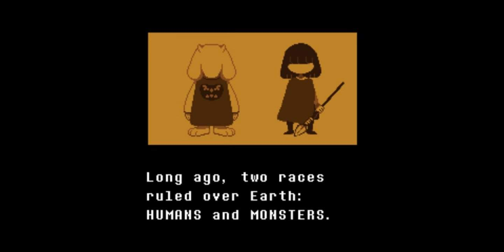

Undertale e um jogo indie bastante conhecido no mundo, você provavelmente ja ouviu falar sobre Undertale.
Um resumo basico de Undertale, Você é FRISK, Uma criança com idade INDEFINIDA/NÃO MENCIONADA que acidentalmente caiu no Subsolo de uma montanha chamada MONTEEBOTT onde anos houve uma guerra entre monstros e humanos, com a vitoria dos Humanos eles selaram os monstros no Monte Ebott, no subsolo.
Mas isso não importa agora pois falaremos sobre Clover, que também é uma criança com a missão de encontrar as 5 almas (Crianças) perdidas dentro do Monte Ebott (A historia de Clover se passa ANTES de Frisk.) Clover carrega um mapa, uma arma de brinquedo e um chapéu
Apos Clover se jogar dentro do Monte Ebott, Conhecendo Flowey, um monstro de flor que ""ajudara"" Clover a NÂO MORRER pois ele não tem DETERINAÇÃO Suficiente para voltar. Nesse momento você tem 3 escolhas:
Em Undertale e Undertale Yellow você encontrarar monstros que alguns deles vão te atacar para roubar a sua ALMA, com base nisso, Se você machucar os monstros ate um certo ponto, você pode poupa-los fazendo que você entre a rota NEUTRA, nessa rota e bem simples... Afinal o mais dificil e o...
Na Rota Pacifista você NÃO ira matar NENHUM monstro, como a rota diz: "Pacifista", a historia na rota pacifista e a "true ending" ou a rota que se CONECTA com Undertale pois Essa historia vem ANTES de Undertale como dito anteriormente. O Final Boss dessa rota e Ceroba Ketsukane, Uma raposa VIUVA que tinha uma filha, "Kanako Ketsukane" e um Marido, "Chujin Ketsukane", um cientista que era um "monstro chefe", No meio do jogo nos conhecemos ela como apenas uma amiga de infancia do Sheriff "Starlo", ela nos ajuda a passar pelo antigo e esquecido laboratorio dentro das montanhas, lutando e vencendo Axel de uma forma "pacificamente" e "romanticamente", apos passar pelo laboratorio chegando no elevador, nos descobrimos graças ao Starlo a motivação de Ceroba...
A Motivação dela era ACHAR e EXTRAIR uma alma humana PURA, que nunca tentou ou atacou um monstro, a antiga pesquisa de Chujin era usando uma alma PURA para VOLTAR a ser imortal, Chujin era um monstro chefe, ele nunca ia morrer, se não houvesse um filho/filha, suas celulas "monstro chefe" foram repassadas para sua filha, Kanako tornando-a "imortal", o tempo de Chujin estava acabando, ele estava adoecendo e morrendo aos poucos, e em seus ultimos momentos ele contou toda sua pesquisa para sua esposa, Ceroba, que queria torna o sonho de seu marido real, ele lhe contou onde estava a alma AZUL, a integridade, que estava debaixo da casa em.um porão, Ceroba foi local ver achandl uma maleta... mas sua filha Kanako estava atras dela, ela tinha escutado toda aquela conversa entre seu pai e sua mãe e queria ajudar ele, seu pai, ela insistiu para aplicar o prototipo nela com a alma da integridade que na TEORIA era uma alma pura, Ceroba falou que não mas acabou cedendo... aplicando a extração da integridade em sua filha, tudo parecia bem, ate quando Kanako cedeu, caindo no chão sem responder o chamado de sua mãe, No começo da historia, nas ruinas, nos, o jogador ou Clover, descobrimos que uma CRIANÇA ANTERIORMENTE atacou alguns monstros, tornando-a impura, no que resultou futuramente na "morte" de Kanako, mas isso tudo e apenas memorias que vimos, As memorias de Ceroba estavam colapsando, ela não estava se importando com nada, apenas querendo roubar e EXTRAIR a pureza da NOSSA alma, A Alma de Clover, a Justiça depois de uma longa batalha, vencemos Ceroba onde nos temos duas escolhas... MATAR ou POUPAR, nos escolhemos poupar (obviamente) com ainda o objetivo de achar as almas das crianças, mas nos percebemos que ja era tarde, todas as 5 crianças ja devem estar mortas, e suas almas capturadas, então nos decidimos nos sacrificar, entregando no chapeu a Martlet, nossa arma para Starlo... e NOSSA ALMA a CEROBA, que leva para o Rei ASGORE guardando-a junto com as outras 5 almas...
De qualquer forma, ta faltando uma rota, não é?
Nessa rota nos levamos a JUSTIÇA a os montros... bom... isso e na nossa visão mas na visão dos monstros somos um genocida, nos SEGUIMOS a Rota Genocida, matando UM por UM, e CADA monstro de CADA região, de CADA lugar, sem nem poupando os robos do Laboratorio, ate Flowey nos questiona o "Por que?" de destruir os robos da instalação, o que nos ignoramos ele, e seguimos caminho ate achar Axel, que usando uma tampa de lixo bloqueia os nossos tiros, enquanto comenta sobre coisas da raça humana e monstro ate dizer: "Olha eu não queria mas, era meu protocolo e eu acabei matando aquela humana" ao ouvir isso, Clover entra em um estado de furia aumentando seu "L.O.V.E" para "19", LOVE e uma sigla para " Level Obtido por ViolÊncia" e enfim destruindo Axel ao meio, continuando nosso caminho, achamos Martlet, uma Guarda Real novata, que ja encotramos varias vezes na nossa jornada da "Justiça", ela sempre fugia no ultimo segundo, sem termos tempo de aplicar a "Justiça" nela, mas dessa vez ela decidiu lutar contra nos, utilizando a seringa com a Alma da INTEGRIDADE, se tornando algo maior...
Martlet se tornou algo maior, algo no cêu que esta ACIMA DE NOS, começando uma batalha extremamente dificil, nossos tiros causam 0 de dano nela, pois ela esta com uma armadura, apos muita troca de tiro e penas, quebramos a armadura dela, começando a dar dano, e ela começa conversa mais com a gente, dizendo que não podemos ganhar, ordenando para desistir e aceitar o seu fim e terminar nossa "Justiça", mas nos ignoramos isso e matamos ela alcaçando o LOVE 20,Clover já estava no seu potencial maximo, acima de qualquer monstro, poderiamos matar apenas com um tiro, Flower nos questiona o porquê perder tempo com isso tudo, ordenando nos irmos ao Castelo Real de uma vez, porem nos sacamos nossa arma e traimos Flower, matando-o com 6 tiros... e no fim, chegamos no castelo e matamos o Rei Asgore sem mais ou menos, levando as 5 almas de volta para superfície... terminando nossa Justiça
(terminar em casa)